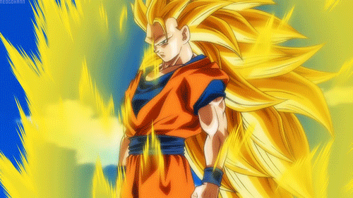
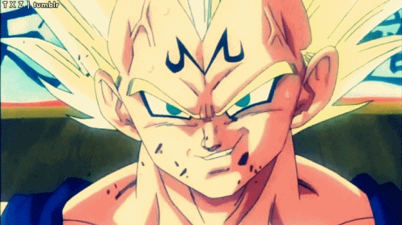
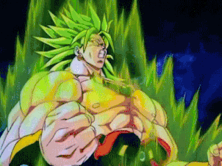
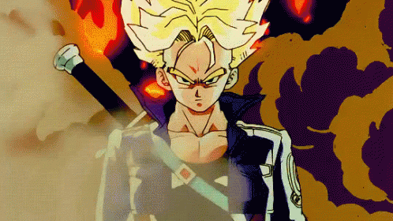
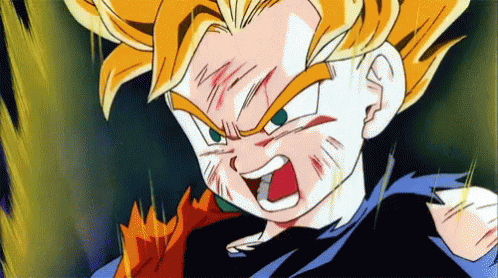
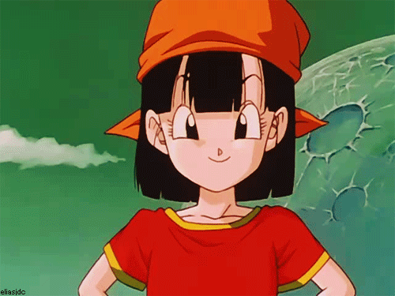

Saiyans are a proud and battle-hardened race originating from Planet Vegeta in Dragon Ball Z.
They are known for their unparalleled combat instincts, aggressive nature, and relentless desire to grow stronger.
Unlike many species, Saiyans thrive in battle, constantly seeking powerful opponents to challenge themselves.
Saiyans can analyze opponents mid-battle and adjust their tactics accordingly. Even without formal training, they instinctively know how to fight.
Through sheer determination and training, they constantly break past their natural limits.
Saiyans learn to use Ki (energy attacks) faster than most races, leading to powerful techniques like the Kamehameha and Final Flash.
Everything about Saiyans—from their natural strength to their love for fighting and constant evolution—makes them one of the most powerful warrior races in Dragon Ball Z.

Goku
Goku is the main protagonist of the Dragon Ball franchise, created by Akira Toriyama. He's a Saiyan warrior who was sent to Earth as a baby. Originally named Kakarot, Goku was raised by Grandpa Gohan and grew up with a pure heart and a love for fighting strong opponents.
As a child (Dragon Ball), Goku trains in martial arts, makes friends, and goes on adventures to find the Dragon Balls.
As an adult (Dragon Ball Z), he learns about his alien heritage, defends Earth from powerful enemies like Frieza, Cell, and Majin Buu, and becomes the first to achieve forms like Super Saiyan.
In Dragon Ball Super, Goku reaches godlike power levels, including Super Saiyan God, Super Saiyan Blue, and Ultra Instinct, battling threats from alternate universes and gods.
He's also appeared in Dragon Ball GT (non-canon) and many movies, often saving the universe with his strength, kindness, and never-give-up spirit.

Vegeta
Vegeta is one of the most iconic characters in the Dragon Ball franchise. He's the Prince of the Saiyan race, originally introduced as a ruthless villain, but over time, he becomes one of Earth's greatest defenders and Goku's lifelong rival.
Vegeta arrives on Earth as a merciless Saiyan warrior, seeking the Dragon Balls. He fights Goku in a legendary battle but is eventually defeated and retreats.
Though he starts off cold and prideful, Vegeta slowly begins to care for the people around him—especially Bulma (whom he marries) and their children (Trunks and Bulla). He never fully loses his pride but evolves into a true hero.
This is one of the core dynamics of the series. Vegeta is obsessed with surpassing Goku, constantly training to become stronger. Unlike Goku, who fights for fun, Vegeta fights to prove his strength and protect his family.
Namek/Frieza Saga: Becomes an anti-hero, briefly teams up with the Z Fighters.
Cell Saga: Achieves Super Saiyan but is outclassed by others. His arrogance nearly causes disaster.
Majin Buu Saga: Lets himself be possessed to gain power (Majin Vegeta), then sacrifices himself to save Earth—a major turning point for his character.
Dragon Ball Super: Reaches god-level forms like Super Saiyan Blue, trains with Whis, and even surpasses Goku in moments. Notably, he defeats Toppo (a God of Destruction candidate) and shows massive growth emotionally and morally.
At his core, Vegeta is a proud warrior who evolves from a cold, vengeful prince into a powerful protector, husband, and father—while never losing his fierce edge or pride in his Saiyan heritage.

Broly
Broly is a Saiyan warrior known for his immense power and rage-fueled fighting style.
Originally introduced in the non-canon 1993 film Dragon Ball Z: Broly - The Legendary Super Saiyan, he was portrayed as a destructive, unstable villain with a deep hatred for Goku due to trauma from their time as infants.
In 2018, Broly was reimagined and officially made canon in Dragon Ball Super: Broly.
This version of Broly has a tragic backstory—exiled as a baby by King Vegeta due to his overwhelming power.
He grows up on a harsh planet with his father Paragus, who trains and controls him. After being discovered by Frieza, Broly is brought to Earth and ends up battling Goku and Vegeta.
Unlike his original version, this Broly is more sympathetic and misunderstood, acting out of confusion and manipulation rather than malice. His raw strength allows him to push past limits, eventually forcing Goku and Vegeta to fuse into Gogeta to stop him.
Goku later befriends Broly, showing him kindness and offering to help him control his power, hinting at Broly's future as more of an ally than a villain.

Trunks
Trunks is the son of Vegeta and Bulma, making him a hybrid Saiyan-Earthling with immense potential. He has two major versions in the series: the future Trunks and the present Trunks.
Future Trunks comes from a dystopian timeline where Goku dies from a heart virus and the Androids wreak havoc. He travels back in time using a time machine built by his mother to warn the Z Fighters and help prevent his future.
This version is serious, noble, and battle-hardened, becoming a fan-favorite for his dramatic entrance and defeat of Frieza. Present Trunks, on the other hand, is born during the main timeline and grows up alongside Goten, becoming a more playful and mischievous character.
The two fuse to become Gotenks, a powerful yet cocky fusion warrior. Trunks also plays a central role in Dragon Ball Super, especially in the Goku Black arc, where he returns to seek help against a powerful foe threatening his future once again. Known for his signature purple hair and sword,
Trunks is a blend of his parents' strengths—Bulma's intelligence and Vegeta's pride and fighting spirit.

Gohan
Gohan is the first son of Goku and Chi-Chi, and one of the most important characters in the Dragon Ball series. Unlike his father, Gohan is gentle, intelligent, and more academically focused, though he possesses incredible hidden power due to his hybrid Saiyan-human heritage.
As a child, he's trained by Piccolo, who becomes a mentor and father figure to him. Gohan plays a critical role in major battles, especially during the Cell Saga, where he becomes the first to achieve Super Saiyan 2 and defeats Cell in a climactic showdown, showcasing his true potential.
Despite being one of the strongest fighters, Gohan chooses to focus on his studies and family life rather than constant training. In Dragon Ball Super, he rediscovers his fighting spirit during the Tournament of Power and reaches a new level of strength, known as Gohan Beast in the movie Dragon Ball Super: Super Hero, where he once again takes the spotlight.
Gohan represents the balance between brains and brawn and often serves as a symbol of untapped potential and inner strength.

Goten
Goten is the second son of Goku and Chi-Chi, and the younger brother of Gohan. He closely resembles his father in appearance and personality, showing a cheerful and carefree nature. Despite his young age, Goten demonstrates incredible strength and becomes a Super Saiyan with ease, something that took older Saiyans years to achieve.
He quickly forms a close friendship with Trunks, and the two are often seen training, playing, or getting into mischief together.
Goten and Trunks learn the Fusion Dance and become Gotenks, a powerful but cocky warrior who plays a key role during the Majin Buu saga.
Though Goten has immense potential, he's not as battle-driven as Goku or Vegeta and doesn't play a central role in later arcs like Dragon Ball Super, where he mostly appears during peaceful times.
His character represents the next generation of fighters and the lighthearted spirit of childhood in the Dragon Ball universe.

Pan
Pan is the daughter of Gohan and Videl, and the granddaughter of Goku and Mr. Satan. She's a quarter-Saiyan with a bold personality and a strong sense of adventure.
Even as a toddler, Pan shows remarkable strength and energy, capable of flying and performing basic martial arts techniques without formal training.
In Dragon Ball Super, she's mostly seen as a baby, but her potential is hinted at multiple times.
In Dragon Ball GT, which is non-canon, Pan is a major character—older and very independent, traveling the galaxy with Goku and Trunks on various adventures.
In Dragon Ball Super: Super Hero, she starts training under Piccolo, following in her father's footsteps, and begins to show serious promise as a fighter.
Despite her young age, Pan is brave, confident, and often eager to prove herself, embodying the Saiyan spirit passed down through her family.